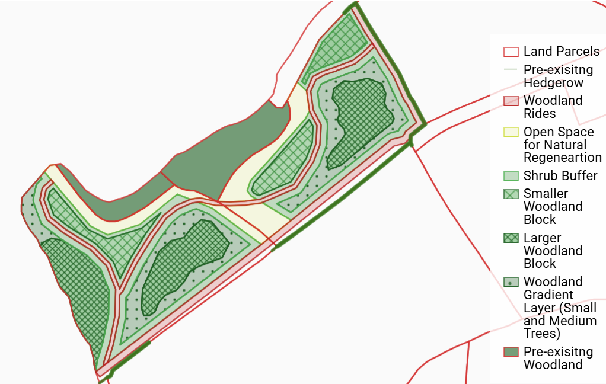
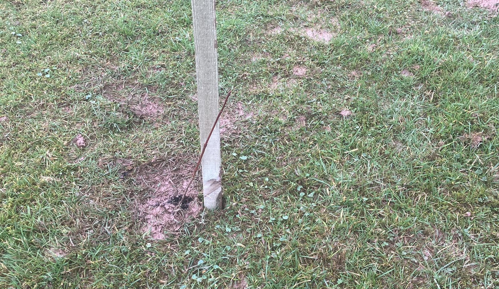
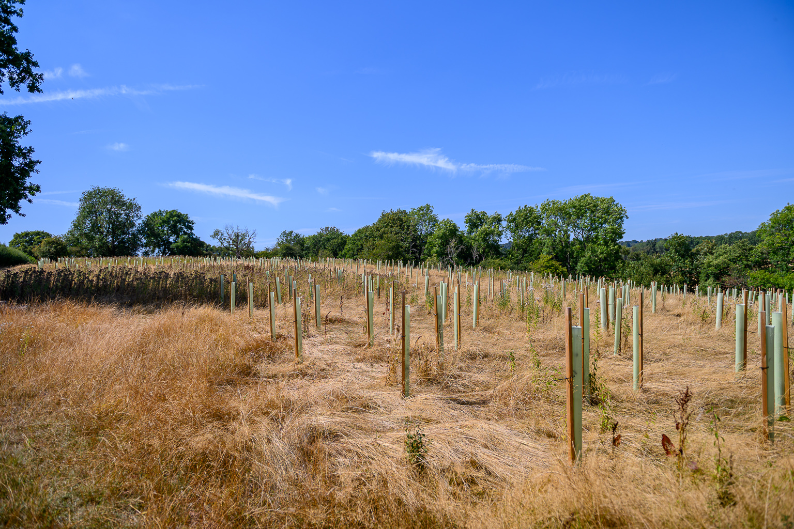

The trees are all in now. We were up early this morning, walking the rows to check for any stakes and guards blown over in last night's strong winds — the last job on a project that's been the best part of a year in the planning, and many more years than that in the thinking.
We chose two fields on the west of the farm, Price Near and Price Far, right beside a stretch of ancient woodland and the River Rea. Both had been permanent grassland, intensively grazed for as long as we've farmed here. Now they're planted with a mix of native trees as part of the Severn Treescapes project, which aims to build a wildlife habitat corridor running all the way from the Wye Valley to the Wyre Forest. The project is led by the Gloucestershire, Herefordshire and Worcestershire Wildlife Trusts, and since we sit just over the border in Shropshire, there was a bit of checking to do before we could be included. Thankfully it was all cleared.
Stakes and guards arrived in mid-January, and the trees themselves followed about a week before planting. In the months beforehand I'd put up some camera traps in the strip of ancient woodland next door, on the steep bank running down to the Rea. Unsurprisingly they picked up plenty of roe and muntjac deer, so we already knew the guards weren't optional.
There's a line of veteran trees running between the two fields — the last remnant of what was once a hedge, now just the big trees standing on their own. The Wildlife Trust organised everything for us, bringing in a team of contractors to carry out the actual planting, and we're hugely grateful for the work they put in. The real starting point for all this was a Woodland Conference I went to in March last year, organised by the Middle Marches Community Land Trust — that's really where the idea took hold.
In total we've planted 2,800 trees across just over seven acres, 18 species in all, including oak, hornbeam, wych elm, silver birch, hazel, hawthorn, crab apple and wild cherry. A few species were deliberately left out: sycamore, yew and black walnut are all poisonous to horses, so they had no place here.
The design is more thoughtful than just filling the fields with trees. They've gone in as blocks, leaving space for natural regeneration to spread out from the existing woodland, with rides cut through to let people get around, and room kept for the Simon Evans Way footpath, which already ran along the south-east margin of the fields. Five-metre rides run alongside the existing boundary hedges too, wide enough for maintenance access. Planting follows a gradient layering, with the largest trees surrounded by progressively smaller ones, and a three-to-five-metre buffer of high-density shrub planting around every ride.
Nurse trees are planted around the main specimens to shelter the saplings while they establish, giving them protection from strong winds and hard frosts so they grow up tall and straight. Once they've done their job, the plan is to selectively coppice the nurse trees, freeing up the main tree they've been sheltering to put on real growth. Some blocks are planted at higher density with taller trees, others more sparingly with fewer oaks. We also left space around the existing stacks of rotting wood from earlier coppicing along the riverbank — really good shelter for frogs, toads, small mammals and insects.
{kind=link}

The planting plan for the new woodland: blocks, rides and buffer planting around Price Near and Price Far. Click to enlarge.
It will be fascinating to see how the woodland develops from here.
The stakes and guards went into the big shed first; the trees themselves arrived from the nurseries only a week before planting. They were cell-grown rather than bare-root, so each one came with a small plug of soil around its roots, giving it a head start. They'd also been treated with a mycorrhizal hydrogel before planting. Mycorrhizal fungi form a partnership with a tree's roots, effectively extending its root system many times over and improving how well it can take up water and nutrients, phosphorus in particular. The hydrogel coats the roots in a moisture-retaining gel packed with these fungi, so as the tree settles in, it's already establishing that relationship, with a reserve of moisture close at hand to see it through the first dry spell.

Cell grown tree with stake, before deer guard installed.
For me, the pleasure in this is really in the process rather than the end result — watching the wood change through the seasons, and from one year to the next. I don't feel any particular need to leave a legacy, though it would be nice to think the woodland might still be standing in two hundred years' time, or longer still.
There's been a fair bit of debate about what to actually call the new wood. I rather like the idea of naming it after the person from the Wildlife Trust who's put so much work into it, and has been out to the farm more times than I can count, from the early planning through to the planting and every follow-up visit since. There's something appealing about people coming across the name on a map one day and wondering exactly why it's called that — a small puzzle left for whoever comes after us to work out.
There are some wonderful names for fields, copses and hamlets around here. Bagginswood, just a couple of miles north of us, is a good example. J.R.R. Tolkien famously drew on the Marches borderlands for inspiration for The Shire, and I do wonder whether Frodo and Bilbo got their names from him poring over maps of this area and thinking that would make a good name for a character.
It's been such a long stretch without rain that it's taken its toll on the trees we planted back in February. Looking down the tubes has become a regular part of the day — there's a real element of jeopardy in it, never quite knowing what you'll find. Some species have clearly coped better than others, but on the whole we've been pleasantly surprised: in most cases there's a small tree in there, but a healthy-looking one. We can't realistically water 2,800 trees, so for now we're just hoping for rain.

Rows of stakes and tree tubes across the newly planted woodland in the Price fields.
There was great excitement the day we first spotted a tree poking up above the top of its guard, and there have been plenty more since. The honeysuckle in particular has done amazingly well.
Rain, at last. After weeks of squinting hopefully at the sky, it's finally arrived, and in exactly the form we'd have asked for if anyone had thought to ask: long, gentle spells rather than a sudden deluge. That matters more than it might sound. Ground this dried out and cracked doesn't so much drink a heavy downpour as shrug it off, sending most of it running straight across the surface and down towards the Rea, doing the trees little good and raising the risk of flooding along the way. Slow, steady rain is a different matter entirely, given time to soak in properly and actually reach the roots. It won't undo weeks of drought stress in one go, but the tubes are getting a rather more cheerful inspection this week.